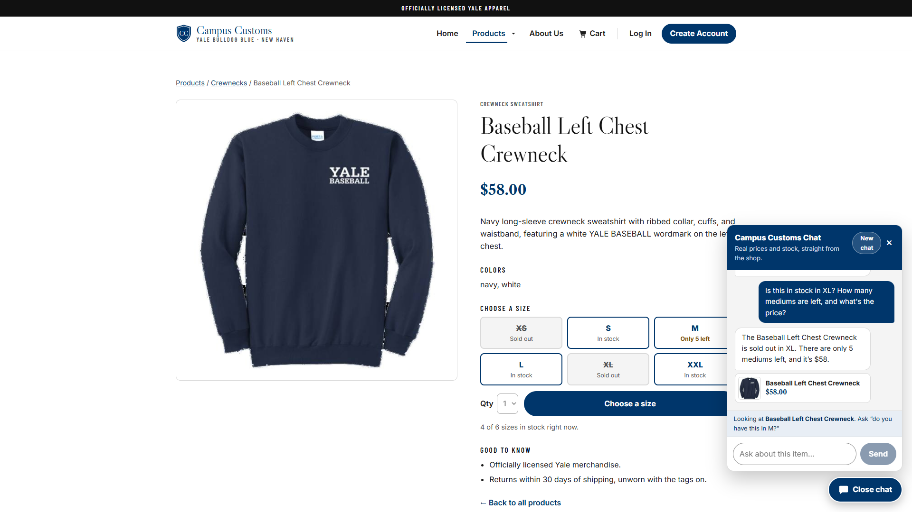
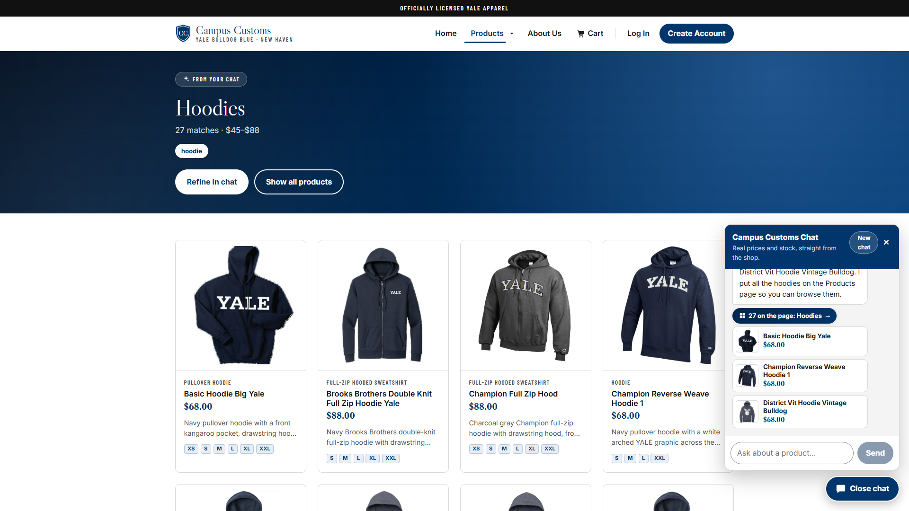
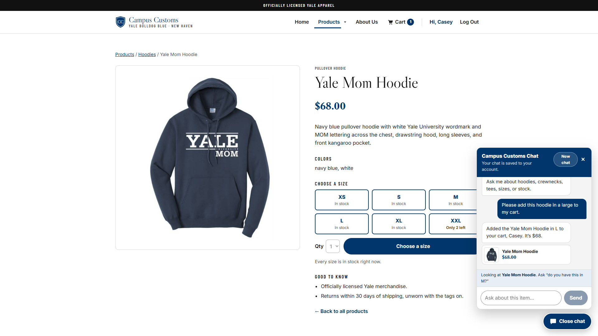
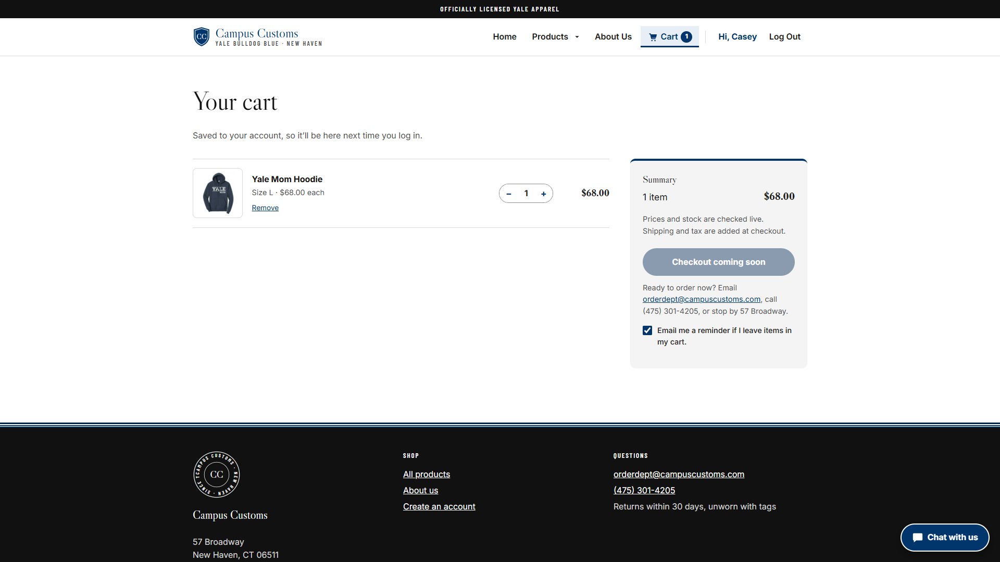
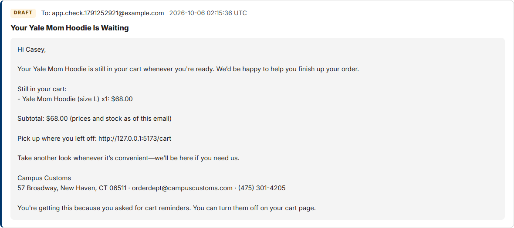

Summary
| Check | What we asked or did | Result |
|---|---|---|
| 1. Chat checks inventory | "Is this in stock in XL? How many mediums are left, and what's the price?" on the Baseball Left Chest Crewneck page | PASS Sold out in XL, 5 mediums left, $58, all matching the database |
| 2. Search-result cards | "What hoodies do you have?" from the home page | PASS 27 hoodie cards appeared on the Products page ($45–$88), matching the database |
| 3. Usability feature (Problem 9) | Saved cart: the chatbot adds an item, the cart page saves it, and a reminder email is drafted | PASS Cart badge 1, cart row saved in cart_items, draft in email_outbox |
Check 1: The chat checks an item's inventory and price
PASSGuest shopper on the Baseball Left Chest Crewneck product page.


inventory and catalogue tables, so the stock and price came from the database,
not a guess.
Chat transcript and database values
Shopper: Is this in stock in XL? How many mediums are left, and what's the price?
Agent: The Baseball Left Chest Crewneck is sold out in XL. There are only 5 mediums left, and it's $58.
| Database | XS | S | M | L | XL | XXL | Price |
|---|---|---|---|---|---|---|---|
inventory / catalogue | 0 | 15 | 5 | 25 | 0 | 25 | $58.00 |
The agent used its check_stock tool, and the backend rejects any reply that quotes a price or stock level without a database lookup for that message.
Check 2: A category question puts search-result cards on the page
PASSGuest shopper starting on the home page.


/products and showed a "From your chat" banner (Hoodies · 27 matches · $45–$88) over 27 hoodie
cards, each with an image, name, price, short info, and sizes in stock. The agent returned the search as structured
data and the front end rendered it, and clicking the first card (Basic Hoodie Big Yale) still opened its product page.
Chat transcript and database values
Shopper: What hoodies do you have?
Agent: We have 27 hoodies, ranging from $45 to $88. Standouts include the Basic Hoodie Big Yale, Champion Reverse Weave Hoodie 1, and District Vit Hoodie Vintage Bulldog. I put all the hoodies on the Products page so you can browse them.
| Item | On the page | In the database |
|---|---|---|
| Hoodies | 27 cards | 27 catalogue rows whose garment type is a hoodie |
| Price range | $45–$88 | $45.00–$88.00 |
Check 3: Usability feature from Problem 9, a saved cart with chat and reminder emails
PASSA brand-new test shopper, Casey Checker, signed up with "Email me a reminder if I leave something in my cart" checked.


add_to_cart tool ("Added the Yale Mom Hoodie in L to your cart, Casey. It's
$68."), and the Cart badge in the header updated to 1 right away. The agent knew "this hoodie" from the page and
checked live stock before adding.


cart_items row (yale-mom-hoodie, L, 1), and users.cart_emails = 1.


draft in email_outbox, so the shop can follow up with shoppers who left
something behind.